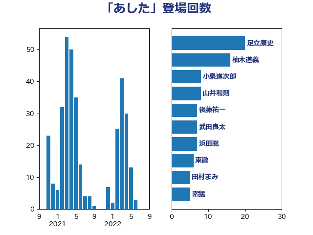

単語「あした」

| 足立康史 | 日本維新の会 | 20 回 |
| 柚木道義 | 立憲民主党 | 16 回 |
| 小泉進次郎 | 自由民主党 | 8 回 |
| 山井和則 | 立憲民主党 | 8 回 |
| 後藤祐一 | 立憲民主党 | 7 回 |
| 武田良太 | 自由民主党 | 7 回 |
| 浜田聡 | NHK党 | 7 回 |
| 東徹 | 日本維新の会 | 6 回 |
| 田村まみ | 国民民主党 | 5 回 |
| 階猛 | 立憲民主党 | 5 回 |
| 倉林明子 | 日本共産党 | 4 回 |
| 塩村あやか | 立憲民主党 | 4 回 |
| 大塚耕平 | 国民民主党 | 4 回 |
| 山本太郎 | れいわ新選組 | 4 回 |
| 山際大志郎 | 自由民主党 | 4 回 |
| 熊谷裕人 | 立憲民主党 | 4 回 |
| 茂木敏充 | 自由民主党 | 4 回 |
| 長妻昭 | 立憲民主党 | 4 回 |
| 吉良州司 | 無所属 | 3 回 |
| 宮本徹 | 日本共産党 | 3 回 |
| 山口壯 | 自由民主党 | 3 回 |
| 平木大作 | 公明党 | 3 回 |
| 田村憲久 | 自由民主党 | 3 回 |
| 石井苗子 | 日本維新の会 | 3 回 |
| 石橋通宏 | 立憲民主党 | 3 回 |
| 萩生田光一 | 自由民主党 | 3 回 |
| 西村康稔 | 自由民主党 | 3 回 |
| 赤羽一嘉 | 公明党 | 3 回 |
| 青山大人 | 立憲民主党 | 3 回 |
| 上川陽子 | 自由民主党 | 2 回 |
| 中島克仁 | 立憲民主党 | 2 回 |
| 串田誠一 | 日本維新の会 | 2 回 |
| 井坂信彦 | 立憲民主党 | 2 回 |
| 和田有一朗 | 日本維新の会 | 2 回 |
| 小沼巧 | 立憲民主党 | 2 回 |
| 小熊慎司 | 立憲民主党 | 2 回 |
| 小西洋之 | 立憲民主党 | 2 回 |
| 山下芳生 | 日本共産党 | 2 回 |
| 山岸一生 | 立憲民主党 | 2 回 |
| 平井卓也 | 自由民主党 | 2 回 |
| 斎藤洋明 | 自由民主党 | 2 回 |
| 枝野幸男 | 立憲民主党 | 2 回 |
| 梅村みずほ | 日本維新の会 | 2 回 |
| 浅田均 | 日本維新の会 | 2 回 |
| 浜地雅一 | 公明党 | 2 回 |
| 田村智子 | 日本共産党 | 2 回 |
| 石田昌宏 | 自由民主党 | 2 回 |
| 若宮健嗣 | 自由民主党 | 2 回 |
| 菅直人 | 立憲民主党 | 2 回 |
| 藤田文武 | 日本維新の会 | 2 回 |
| 辻元清美 | 立憲民主党 | 2 回 |
| 高橋千鶴子 | 日本共産党 | 2 回 |
| 麻生太郎 | 自由民主党 | 2 回 |
| ながえ孝子 | 無所属 | 1 回 |
| 三浦信祐 | 公明党 | 1 回 |
| 上月良祐 | 自由民主党 | 1 回 |
| 上田英俊 | 自由民主党 | 1 回 |
| 中川貴元 | 自由民主党 | 1 回 |
| 今井絵理子 | 自由民主党 | 1 回 |
| 伊佐進一 | 公明党 | 1 回 |
| 勝部賢志 | 立憲民主党 | 1 回 |
| 古川元久 | 国民民主党 | 1 回 |
| 吉川沙織 | 立憲民主党 | 1 回 |
| 吉良よし子 | 日本共産党 | 1 回 |
| 嘉田由紀子 | 無所属 | 1 回 |
| 堀場幸子 | 日本維新の会 | 1 回 |
| 大串博志 | 立憲民主党 | 1 回 |
| 大西健介 | 立憲民主党 | 1 回 |
| 大西英男 | 自由民主党 | 1 回 |
| 太栄志 | 立憲民主党 | 1 回 |
| 安達澄 | 無所属 | 1 回 |
| 宮本周司 | 自由民主党 | 1 回 |
| 小森卓郎 | 自由民主党 | 1 回 |
| 小野泰輔 | 日本維新の会 | 1 回 |
| 山崎誠 | 立憲民主党 | 1 回 |
| 岸真紀子 | 立憲民主党 | 1 回 |
| 川田龍平 | 立憲民主党 | 1 回 |
| 後藤茂之 | 自由民主党 | 1 回 |
| 斎藤嘉隆 | 立憲民主党 | 1 回 |
| 松山政司 | 自由民主党 | 1 回 |
| 梅村聡 | 日本維新の会 | 1 回 |
| 森屋隆 | 立憲民主党 | 1 回 |
| 森山浩行 | 立憲民主党 | 1 回 |
| 森本真治 | 立憲民主党 | 1 回 |
| 横沢高徳 | 立憲民主党 | 1 回 |
| 櫻井周 | 立憲民主党 | 1 回 |
| 武部新 | 自由民主党 | 1 回 |
| 河野太郎 | 自由民主党 | 1 回 |
| 河野義博 | 公明党 | 1 回 |
| 泉健太 | 立憲民主党 | 1 回 |
| 泉田裕彦 | 自由民主党 | 1 回 |
| 浅野哲 | 国民民主党 | 1 回 |
| 浮島智子 | 公明党 | 1 回 |
| 熊野正士 | 公明党 | 1 回 |
| 玉木雄一郎 | 国民民主党 | 1 回 |
| 矢倉克夫 | 公明党 | 1 回 |
| 神谷裕 | 立憲民主党 | 1 回 |
| 福島みずほ | 社会民主党 | 1 回 |
| 福田昭夫 | 立憲民主党 | 1 回 |
| 秋本真利 | 自由民主党 | 1 回 |
| 竹谷とし子 | 公明党 | 1 回 |
| 笠井亮 | 日本共産党 | 1 回 |
| 自見はなこ | 自由民主党 | 1 回 |
| 菅家一郎 | 自由民主党 | 1 回 |
| 蓮舫 | 立憲民主党 | 1 回 |
| 西田昌司 | 自由民主党 | 1 回 |
| 赤嶺政賢 | 日本共産党 | 1 回 |
| 赤木正幸 | 日本維新の会 | 1 回 |
| 道下大樹 | 立憲民主党 | 1 回 |
| 遠藤敬 | 日本維新の会 | 1 回 |
| 里見隆治 | 公明党 | 1 回 |
| 重徳和彦 | 立憲民主党 | 1 回 |
| 野田聖子 | 自由民主党 | 1 回 |
| 野間健 | 立憲民主党 | 1 回 |
| 鈴木宗男 | 日本維新の会 | 1 回 |
| 鈴木憲和 | 自由民主党 | 1 回 |
| 阿達雅志 | 自由民主党 | 1 回 |
| 阿部司 | 日本維新の会 | 1 回 |
| 青柳陽一郎 | 立憲民主党 | 1 回 |
| 須藤元気 | 無所属 | 1 回 |
| 高木かおり | 日本維新の会 | 1 回 |
| 高木啓 | 自由民主党 | 1 回 |
| 高橋英明 | 日本維新の会 | 1 回 |